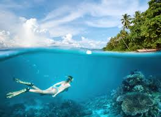
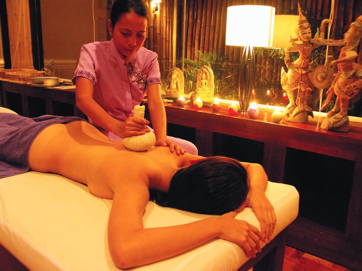
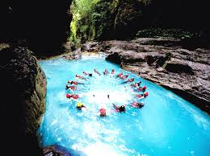
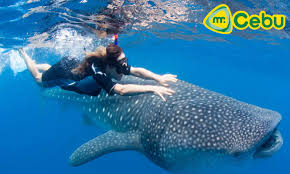
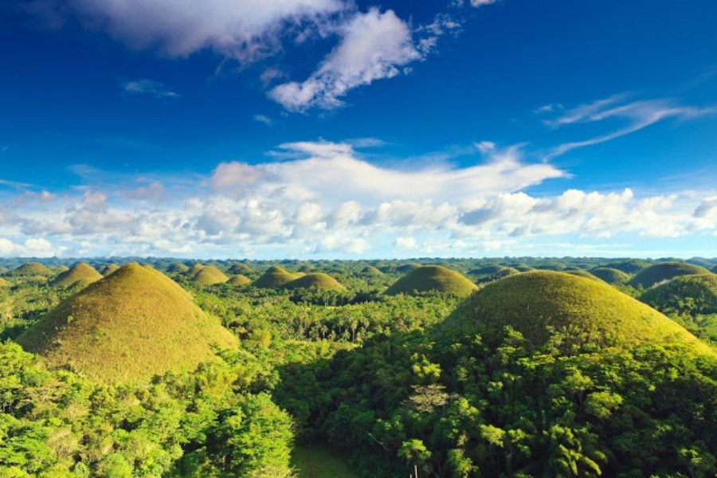

세부여행 놀것들
호핑투어
- 호핑투어는 말그대로 hopping , 즉 점프하다라는 뜻으로 배를 타고 섬의 이곳저곳을 다니며 관광하고 스노쿨링이나 다이빙을 하는 것
- 세부, 보라카이 등 휴양 관광지로 유명한 섬에서 호핑투어가 이루어진다. 호핑은 섬 인근 바다에서 스노클링 체험이다. 대략 5~10만원대로 형성되어 있다.

마사지받기
- 세부 막탄섬의 주요 리조트에 있는 마사지에서 받는 건 비추!
- 이유는 가격이 너무 비싸다.
- 세부에서 마사지 수준은 호텔이나 리조트나 외부나 비슷.
- 하지만 가격은 최대 10배 이상 나기 때문에 이왕이면 외부에서 하는 게 낫다.
- 특히 1시간 동안 오일 마사지를 해도 만 원 정도이고 정말 전문 마사지사가 해주기 때문에 처음엔 아프지만 이게 적응이 되면 정말 시원하고 좋다고한다.

캐녀닝(Canyoning)
- 캐녀닝은 계곡의 모든 것을 몸으로 느낄 수 있는 신종 스포츠이다. 수영, 하이킹, 암벽타기 등이 활동에 포함되어 있다.
- 캐녀닝은 계곡 (캐니언)에서 급류를 타고 내려가는 스포츠이다.
링크클릭

오슬롭 고래상어 투어
- 맑은 바다에서만 살고 있는 고래상어를 가까이에서 볼 수 있는 오슬롭 고래상어 투어.

보홀 초콜렛 언덕
- 세부에서 보홀을 방문하는 이유는 바로 초콜릿 언덕이 있기 떄문이다.
- 키세스 초콜릿 모양을 닮은 초콜릿 언덕은 실제로 보면 생각보다 놀랄 정도의 엄청난 크기 이기 때문이다. 하지만 그만큼 멋진 장관을 보기 위해서는 수많은 계단을 타고 올라가야 한다
